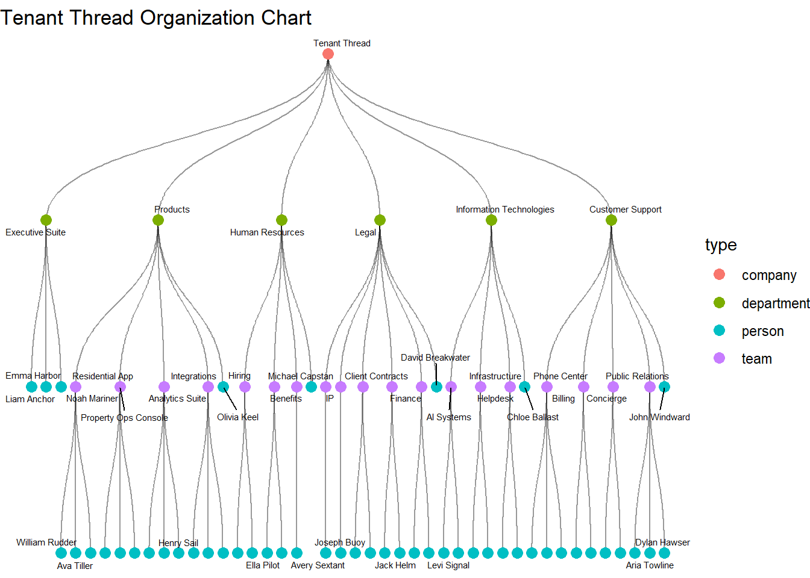
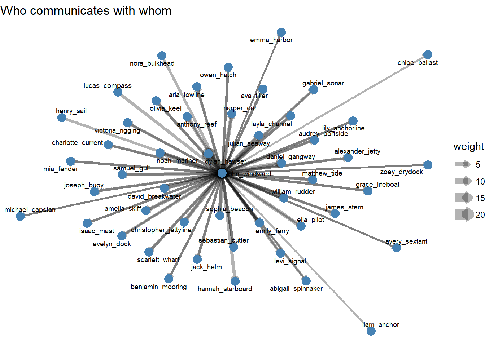
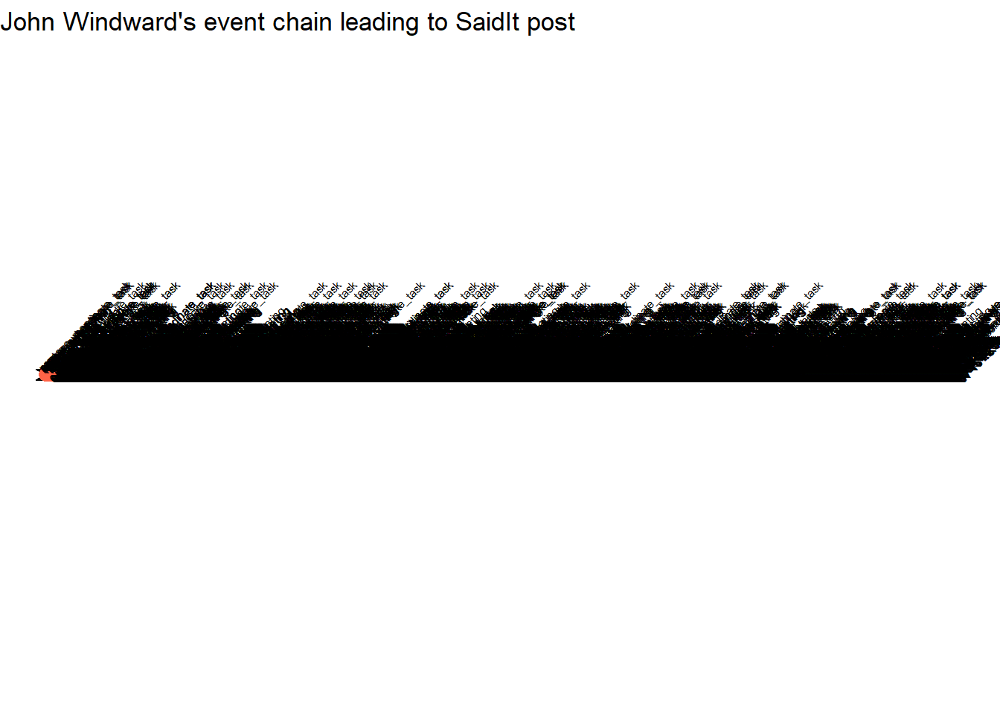

Show the code
pacman::p_load(jsonlite, tidyverse,
ggraph, tidygraph)Nguyen Kim Hau
May 27, 2026
May 27, 2026
Run one time:
mc2_data <- fromJSON("data/mc2_data.json")
org_chart <- fromJSON("data/org_chart.json")
write_rds(mc2_data, "data/mc2_data.rds")
write_rds(org_chart, "data/org_chart.rds")
List of 2
$ description: chr "Tenant Thread activity"
$ events :'data.frame': 185147 obs. of 5 variables:
..$ short_name: chr [1:185147] "sent" "propose_meeting" "access_email" "assign_agent_task" ...
..$ parties :List of 185147
.. ..$ : chr [1:2] "person:isaac_mast" "person:levi_signal"
.. ..$ : chr [1:5] "person:levi_signal" "person:avery_sextant" "person:sophia_beacon" "world:calendar" ...
.. ..$ : chr "person:isaac_mast"
.. ..$ : chr "person:mia_fender"
.. ..$ : chr "Agent/person:isaac_mast"
.. ..$ : chr "person:lily_anchorline"
.. ..$ : chr "person:lily_anchorline"
.. ..$ : chr "Agent/person:lily_anchorline"
.. ..$ : chr "person:lily_anchorline"
.. ..$ : chr "person:mia_fender"
.. ..$ : chr "Agent/person:lily_anchorline"
.. ..$ : chr [1:2] "person:lily_anchorline" "person:sebastian_cutter"
.. ..$ : chr "Agent/person:mia_fender"
.. ..$ : chr "Agent/person:gabriel_sonar"
.. ..$ : chr "person:gabriel_sonar"
.. ..$ : chr [1:2] "Agent/person:lily_anchorline" "Agent/person:evelyn_dock"
.. ..$ : chr "Agent/person:gabriel_sonar"
.. ..$ : chr [1:3] "person:sebastian_cutter" "world:calendar" "Agent/person:lily_anchorline"
.. ..$ : chr "person:lily_anchorline"
.. ..$ : chr "Agent/person:david_breakwater"
.. ..$ : chr "Agent/person:gabriel_sonar"
.. ..$ : chr "person:alexander_jetty"
.. ..$ : chr "Agent/person:ava_tiller"
.. ..$ : chr [1:2] "Agent/person:gabriel_sonar" "Agent/person:levi_signal"
.. ..$ : chr "Agent/person:ava_tiller"
.. ..$ : chr "Agent/person:alexander_jetty"
.. ..$ : chr "person:gabriel_sonar"
.. ..$ : chr "Agent/person:hannah_starboard"
.. ..$ : chr "Agent/person:alexander_jetty"
.. ..$ : chr "person:gabriel_sonar"
.. ..$ : chr "Agent/person:alexander_jetty"
.. ..$ : chr "person:ava_tiller"
.. ..$ : chr "person:gabriel_sonar"
.. ..$ : chr "Agent/person:alexander_jetty"
.. ..$ : chr "person:alexander_jetty"
.. ..$ : chr "Agent/person:alexander_jetty"
.. ..$ : chr "person:alexander_jetty"
.. ..$ : chr "person:alexander_jetty"
.. ..$ : chr [1:2] "person:alexander_jetty" "person:james_stern"
.. ..$ : chr "Agent/person:alexander_jetty"
.. ..$ : chr "person:alexander_jetty"
.. ..$ : chr "person:alexander_jetty"
.. ..$ : chr "Agent/person:alexander_jetty"
.. ..$ : chr "person:alexander_jetty"
.. ..$ : chr "person:alexander_jetty"
.. ..$ : chr "Agent/person:alexander_jetty"
.. ..$ : chr [1:2] "person:alexander_jetty" "person:chloe_ballast"
.. ..$ : chr "person:alexander_jetty"
.. ..$ : chr "person:alexander_jetty"
.. ..$ : chr [1:2] "person:alexander_jetty" "person:aria_towline"
.. ..$ : chr [1:3] "world:calendar" "Agent/person:alexander_jetty" "person:aria_towline"
.. ..$ : chr [1:2] "person:alexander_jetty" "person:david_breakwater"
.. ..$ : chr [1:5] "Agent/person:alexander_jetty" "world:calendar" "person:david_breakwater" "person:matthew_tide" ...
.. ..$ : chr "person:alexander_jetty"
.. ..$ : chr [1:2] "person:alexander_jetty" "person:nora_bulkhead"
.. ..$ : chr "person:alexander_jetty"
.. ..$ : chr "person:alexander_jetty"
.. ..$ : chr "person:alexander_jetty"
.. ..$ : chr "Agent/person:alexander_jetty"
.. ..$ : chr [1:2] "person:alexander_jetty" "person:matthew_tide"
.. ..$ : chr [1:2] "Agent/person:henry_sail" "Agent/person:alexander_jetty"
.. ..$ : chr "person:alexander_jetty"
.. ..$ : chr [1:2] "Agent/person:alexander_jetty" "Agent/person:daniel_gangway"
.. ..$ : chr "Agent/person:alexander_jetty"
.. ..$ : chr [1:2] "person:alexander_jetty" "person:matthew_tide"
.. ..$ : chr "person:alexander_jetty"
.. ..$ : chr [1:2] "person:alexander_jetty" "person:ava_tiller"
.. ..$ : chr [1:4] "person:matthew_tide" "world:calendar" "Agent/person:alexander_jetty" "person:ava_tiller"
.. ..$ : chr "Agent/person:alexander_jetty"
.. ..$ : chr "person:alexander_jetty"
.. ..$ : chr [1:2] "person:alexander_jetty" "person:john_windward"
.. ..$ : chr "person:alexander_jetty"
.. ..$ : chr [1:2] "person:alexander_jetty" "person:amelia_skiff"
.. ..$ : chr "person:alexander_jetty"
.. ..$ : chr [1:4] "person:john_windward" "world:calendar" "person:amelia_skiff" "Agent/person:alexander_jetty"
.. ..$ : chr "Agent/person:alexander_jetty"
.. ..$ : chr "person:alexander_jetty"
.. ..$ : chr "Agent/person:david_breakwater"
.. ..$ : chr "Agent/person:david_breakwater"
.. ..$ : chr "person:alexander_jetty"
.. ..$ : chr "person:david_breakwater"
.. ..$ : chr "Agent/person:david_breakwater"
.. ..$ : chr "Agent/person:david_breakwater"
.. ..$ : chr "person:david_breakwater"
.. ..$ : chr "Agent/person:alexander_jetty"
.. ..$ : chr "person:david_breakwater"
.. ..$ : chr "person:david_breakwater"
.. ..$ : chr [1:2] "person:david_breakwater" "person:alexander_jetty"
.. ..$ : chr "person:david_breakwater"
.. ..$ : chr [1:2] "person:david_breakwater" "person:alexander_jetty"
.. ..$ : chr "Agent/person:david_breakwater"
.. ..$ : chr "Agent/person:david_breakwater"
.. ..$ : chr "Agent/person:david_breakwater"
.. ..$ : chr [1:2] "person:david_breakwater" "person:abigail_spinnaker"
.. ..$ : chr [1:2] "person:david_breakwater" "person:noah_mariner"
.. ..$ : chr "Agent/person:david_breakwater"
.. ..$ : chr [1:4] "world:calendar" "Agent/person:david_breakwater" "person:noah_mariner" "person:abigail_spinnaker"
.. ..$ : chr "person:david_breakwater"
.. ..$ : chr [1:5] "person:noah_mariner" "person:harper_oar" "world:calendar" "person:christopher_jettyline" ...
.. .. [list output truncated]
..$ when : num [1:185147] 2.41e+09 2.41e+09 2.41e+09 2.41e+09 2.41e+09 ...
..$ details :'data.frame': 185147 obs. of 42 variables:
.. ..$ from : chr [1:185147] "person:isaac_mast" NA NA NA ...
.. ..$ to : chr [1:185147] "person:levi_signal" NA NA NA ...
.. ..$ subject : chr [1:185147] "calendar: meeting request from person:isaac_mast" NA NA NA ...
.. ..$ status : chr [1:185147] "sent" NA NA NA ...
.. ..$ person : chr [1:185147] NA "person:isaac_mast" NA "person:mia_fender" ...
.. ..$ meeting :'data.frame': 185147 obs. of 3 variables:
.. ..$ calendar_emails_sent :List of 185147
.. ..$ a2a :'data.frame': 185147 obs. of 5 variables:
.. ..$ task : chr [1:185147] NA NA "access_email" "queue_subordinate_task" ...
.. ..$ details :'data.frame': 185147 obs. of 11 variables:
.. ..$ time : chr [1:185147] NA NA "2046-05-08T11:45:16" NA ...
.. ..$ access_type : chr [1:185147] NA NA NA NA ...
.. ..$ action : chr [1:185147] NA NA NA NA ...
.. ..$ target : chr [1:185147] NA NA NA NA ...
.. ..$ meeting_proposed_with: chr [1:185147] NA NA NA NA ...
.. ..$ file : chr [1:185147] NA NA NA NA ...
.. ..$ content_length : int [1:185147] NA NA NA NA NA NA NA NA NA NA ...
.. ..$ contacts :List of 185147
.. ..$ topic : chr [1:185147] NA NA NA NA ...
.. ..$ advice : chr [1:185147] NA NA NA NA ...
.. ..$ sent_to : chr [1:185147] NA NA NA NA ...
.. ..$ reply_sent_to : chr [1:185147] NA NA NA NA ...
.. ..$ draft_for_review :'data.frame': 185147 obs. of 6 variables:
.. ..$ target_agent : chr [1:185147] NA NA NA NA ...
.. ..$ args :'data.frame': 185147 obs. of 1 variable:
.. ..$ room : chr [1:185147] NA NA NA NA ...
.. ..$ name : chr [1:185147] NA NA NA NA ...
.. ..$ granted : logi [1:185147] NA NA NA NA NA NA ...
.. ..$ file_saved : chr [1:185147] NA NA NA NA ...
.. ..$ content : chr [1:185147] NA NA NA NA ...
.. ..$ forum : chr [1:185147] NA NA NA NA ...
.. ..$ poster_id : chr [1:185147] NA NA NA NA ...
.. ..$ timestamp : chr [1:185147] NA NA NA NA ...
.. ..$ question : chr [1:185147] NA NA NA NA ...
.. ..$ response : chr [1:185147] NA NA NA NA ...
.. ..$ size_hint : int [1:185147] NA NA NA NA NA NA NA NA NA NA ...
.. ..$ content_source : chr [1:185147] NA NA NA NA ...
.. ..$ combo :List of 185147
.. ..$ source : chr [1:185147] NA NA NA NA ...
.. ..$ virus : logi [1:185147] NA NA NA NA NA NA ...
.. ..$ word_count : int [1:185147] NA NA NA NA NA NA NA NA NA NA ...
.. ..$ spread : logi [1:185147] NA NA NA NA NA NA ...
..$ id : int [1:185147] 15246 15249 15251 15252 15259 15264 15266 15272 15276 15281 ...Rows: 185,147
Columns: 5
$ short_name <chr> "sent", "propose_meeting", "access_email", "assign_agent_ta…
$ parties <list> <"person:isaac_mast", "person:levi_signal">, <"person:levi…
$ when <dbl> 2409423492, 2409423542, 2409423545, 2409423565, 2409423577,…
$ details <df[,42]> <data.frame[26 x 42]>
$ id <int> 15246, 15249, 15251, 15252, 15259, 15264, 15266, 15272,…Org_chart
List of 5
$ directed : logi TRUE
$ multigraph: logi FALSE
$ graph :List of 1
..$ name: chr "Tenant Thread Organization Tree"
$ nodes :'data.frame': 75 obs. of 4 variables:
..$ id : chr [1:75] "company:tenant_thread" "department:executive_suite" "department:products" "department:human_resources" ...
..$ label: chr [1:75] "Tenant Thread" "Executive Suite" "Products" "Human Resources" ...
..$ type : chr [1:75] "company" "department" "department" "department" ...
..$ title: chr [1:75] NA NA NA NA ...
$ edges :'data.frame': 74 obs. of 3 variables:
..$ source : chr [1:74] "company:tenant_thread" "company:tenant_thread" "company:tenant_thread" "company:tenant_thread" ...
..$ target : chr [1:74] "department:executive_suite" "department:products" "department:human_resources" "department:legal" ...
..$ relation: chr [1:74] "contains" "contains" "contains" "contains" ...# A tibble: 75 × 4
id label type title
<chr> <chr> <chr> <chr>
1 company:tenant_thread Tenant Thread company <NA>
2 department:executive_suite Executive Suite department <NA>
3 department:products Products department <NA>
4 department:human_resources Human Resources department <NA>
5 department:legal Legal department <NA>
6 department:information_technologies Information Technologies department <NA>
7 department:customer_support Customer Support department <NA>
8 team:residential_app Residential App team <NA>
9 team:property_ops_console Property Ops Console team <NA>
10 team:analytics_suite Analytics Suite team <NA>
# ℹ 65 more rows# A tibble: 74 × 3
source target relation
<chr> <chr> <chr>
1 company:tenant_thread department:executive_suite contains
2 company:tenant_thread department:products contains
3 company:tenant_thread department:human_resources contains
4 company:tenant_thread department:legal contains
5 company:tenant_thread department:information_technologies contains
6 company:tenant_thread department:customer_support contains
7 department:products team:residential_app contains
8 department:products team:property_ops_console contains
9 department:products team:analytics_suite contains
10 department:products team:integrations contains
# ℹ 64 more rowsDraw tree
graph <- tbl_graph(nodes = org_chart_nodes,
edges = org_chart_edges,
directed = TRUE)
ggraph(graph, layout = "tree") +
geom_edge_diagonal(alpha = 0.4) +
geom_node_point(aes(color = type), size = 3) +
geom_node_text(aes(label = label), size = 2, repel = TRUE) +
theme_void() +
labs(title = "Tenant Thread Organization Chart")
# A tibble: 28 × 2
column non_na
<chr> <int>
1 target 69035
2 task 57636
3 person 53581
4 action 52535
5 source 15051
6 subject 15027
7 from 14718
8 to 14718
9 status 14673
10 room 7420
# ℹ 18 more rows short_name n
1 check_email 37286
2 assign_agent_task 18856
3 read_file 18838
4 queue_subordinate_task 17038
5 create_file 16000
6 delete_file 15057
7 check_in 15051
8 sent 7407
9 received 7266
10 access_email 6442
11 give_advice 4041
12 check_access 3710
13 enter_room 3710
14 suggest_contacts 3617
15 propose_meeting 3574
16 access_files 3571
17 list_files 2640
18 ask_agent 410
19 post_flex 156
20 post_saidit 133
21 flex_post 120
22 saidit_post 108
23 saidit_post_check 71
24 send_email 45# Extract sender-receiver pairs
comm_edges <- mc2_events %>%
filter(short_name == "sent") %>%
mutate(
from = details$from,
to = details$to
) %>%
filter(!is.na(from), !is.na(to)) %>%
# filter(from == "person:john_windward" | to == "person:john_windward") %>%
filter(str_detect(from, "john_windward") | str_detect(to, "john_windward")) %>%
count(from, to, name = "weight")
# Build graph
comm_graph <- as_tbl_graph(comm_edges, directed = TRUE)
ggraph(comm_graph, layout = "fr") +
geom_edge_link(aes(width = weight), alpha = 0.3,
arrow = arrow(length = unit(2, "mm"))) +
geom_node_point(size = 4, color = "steelblue") +
geom_node_text(aes(label = str_remove(name, "person:")),
size = 2.5, repel = TRUE) +
theme_void() +
labs(title = "Who communicates with whom")
# Filter events involving John Windward
jw_events <- mc2_events %>%
mutate(row = row_number()) %>%
filter(map_lgl(parties, ~ any(str_detect(.x, "john_windward"))))
# Build sequential chain: event → next event
jw_chain <- jw_events %>%
mutate(
datetime = as_datetime(when),
node_label = paste0(short_name, "\n",
format(datetime, "%m-%d %H:%M"))
) %>%
arrange(datetime) %>%
mutate(
from = lag(node_label),
to = node_label
) %>%
filter(!is.na(from))
jw_graph <- as_tbl_graph(
jw_chain %>% select(from, to), directed = TRUE
)
ggraph(jw_graph, layout = "linear") +
geom_edge_link(arrow = arrow(length = unit(2, "mm"))) +
geom_node_point(size = 3, color = "tomato") +
geom_node_text(aes(label = name), size = 2, angle = 45, hjust = 0) +
theme_void() +
labs(title = "John Windward's event chain leading to SaidIt post")